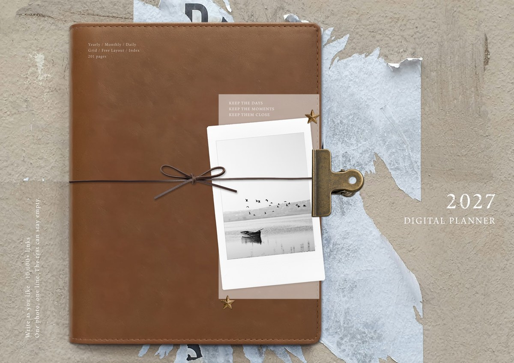
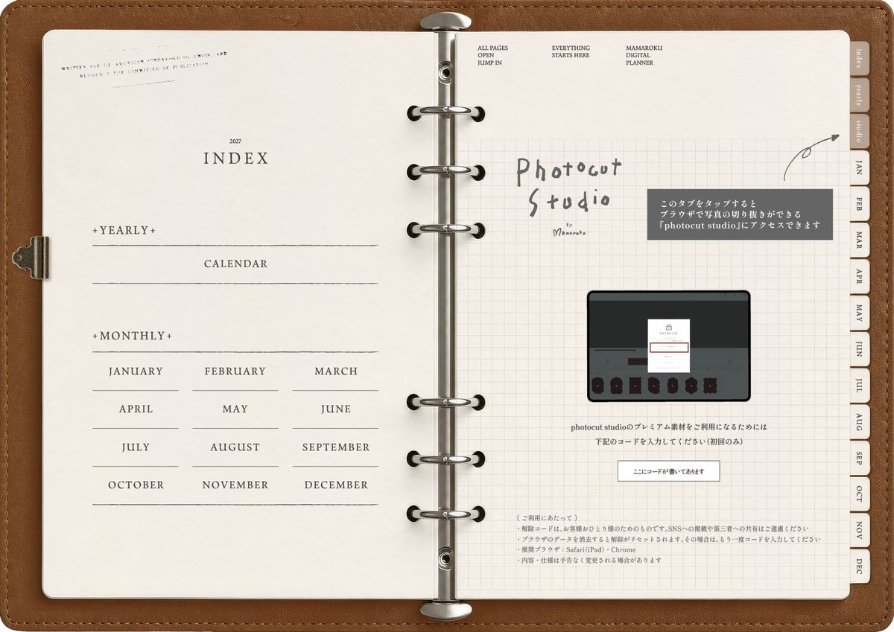
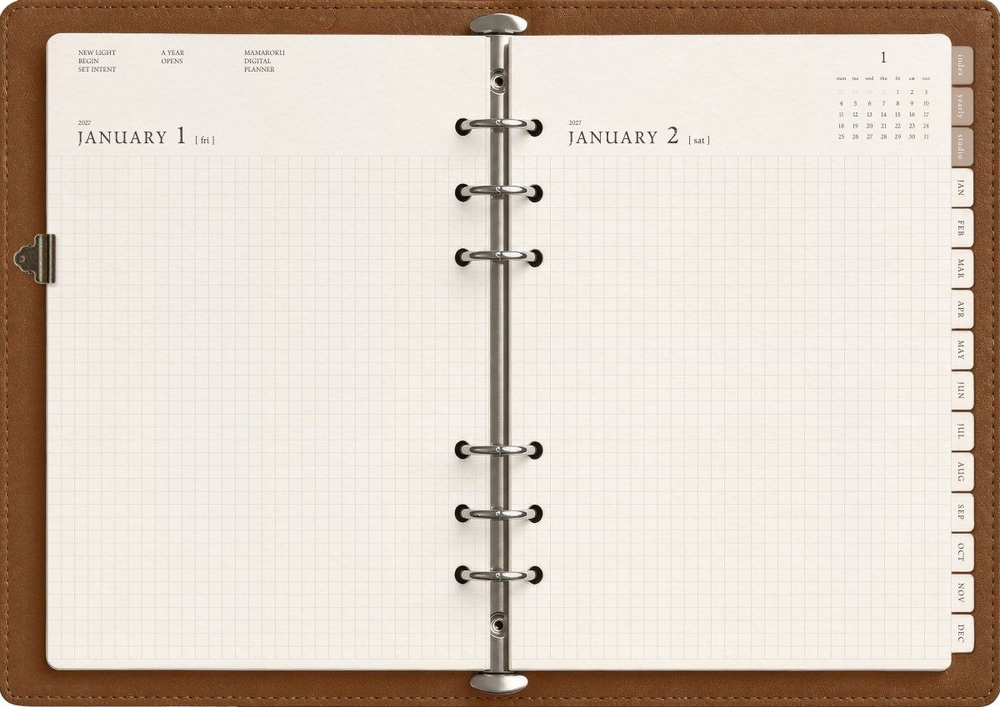

2027 Digital Planner — LEATHER
iPadとGoodNotesで使う、2027年のデジタルプランナーです。年間と月間、そして1見開きに2日ぶんの方眼ページ。書くことも貼る場所も、決めていません。

ただいま制作中です。発売のお知らせは、インスタグラムでいちばん最初にお伝えします。
インスタグラムを見るDesign
システム手帳が好きな人のための、2027年デジタルプランナー。
使い込まれた革のバインダーと、銀色の6穴リング。紙を留めるクリップも、挟んだままの紙片も、そのまま残しました。開くたびに、手帳を開く気分から始められるように。


革のしわ、リングの金属、紙の縁に落ちる影。近くで見るほど、細かいところまで作り込んであります。紙からはみ出したインデックスも、実物のとおりに。
罫線で区切らず、見開き一面を方眼にしました。写真を貼っても。文字だけでも。日付のまわりに書いても。どこに、何を書くかは決めていません。
リアルな手帳の佇まいと、デジタルの身軽さを、両方。
Contents
用意したのは、3種類のページだけです。1年を見わたす年間。予定を立てる月間。そして、自由に使える方眼の日間ページ。余計なものは、できるだけ入れませんでした。
Yearly
1年ぶんの日付が見開きに並びます。日付を押すと、その日のページへ飛びます。
Monthly
1か月を見開きで。予定を書きこむのはここです。右端は方眼のメモ欄にしてあります。
Daily
日付のほかには、なにもありません。一面の方眼を、好きなように使えます。写真を1枚貼って、ひとことだけ。写真を何枚か並べても。文字だけの日があっても。少しだけ残したい日も、たっぷり残したい日も。
Index
紙からはみ出したタブは、全ページに付いています。どこを開いていても、押せばその月へ飛べます。
埋めるところが、ありません。
写真を貼る枠も、書くことの決まりも作りませんでした。
1枚だけの日も、文字だけの日も。
201ページ。好きなように使ってください。
Specs
迷子にならないように、ページとページの行き来を全部リンクでつなぎました。日付を押せばその日へ、タブを押せばその項目へ。ページをめくって探す必要はありません。
Free
2027年版とまったく同じデザイン・同じ構成で、2026年10月の1か月分をご用意しています。ご自分のiPadとノートアプリで、書き心地とリンクの動きをたしかめてから選んでいただけます。
準備中です
発売のお知らせは、インスタグラムでいちばん最初にお伝えします。
インスタグラムを見る